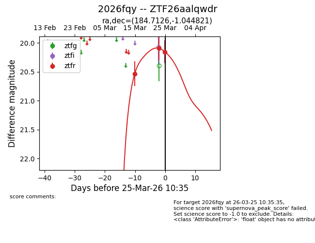
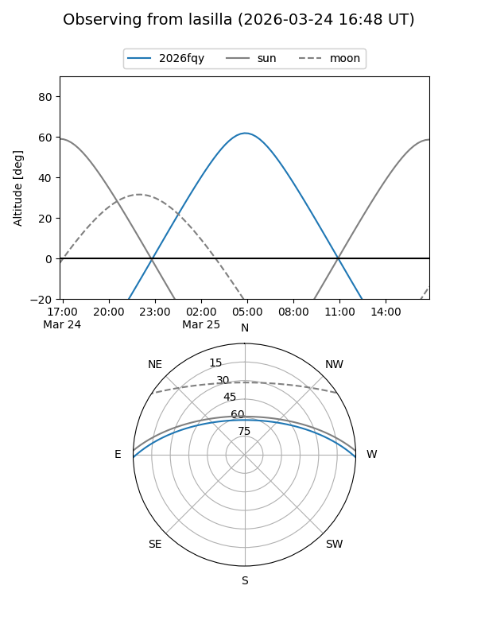
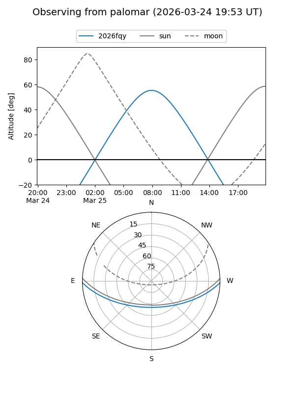
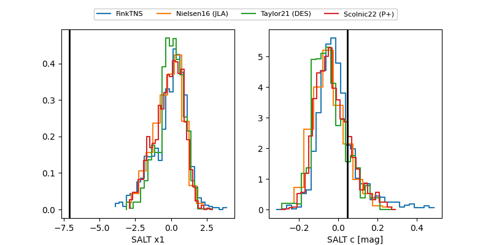

2026fqy
Target 2026fqy at 2026-03-25 10:38
Aliases and brokers:
FINK: link
Lasair: link
ALeRCE: link
TNS: link
YSE: link
alt names
ZTF26aalqwdr (ztf,fink_ztf)
2026fqy (tns,yse)
Coordinates:
equatorial (ra, dec) = 184.7126,-1.04482
equatorial (HMS+DMS) = 12:18:51.03,-01:02:41.36
galactic (l, b) = (286.0724,+60.75577)
Flags:
Photometry:
last ztfr=20.16
3 ztfr detections
Lightcurve

Visibility


Additional plots
